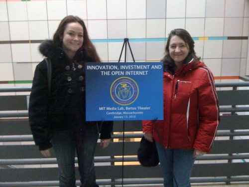
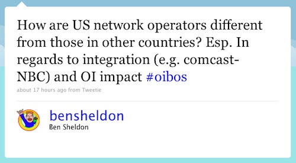
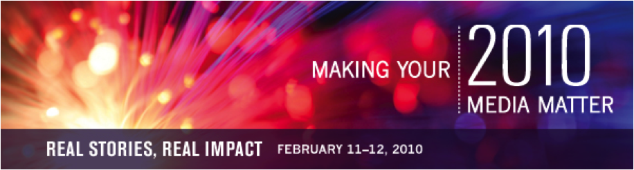

Observations on the FCC Open Internet Workshop at MIT

The Transmission Project staff took a field-trip to yesterday’s FCC Workshop on Innovation, Investment and the Open Internet. As a 3.5 hour, 12 panelist show (plus 2 moderators, a introductory framer, a commissioner and a video introduction from Chairman Genachowski), it was surprisingly engaging. The key question of the evening seemed to be framed as “Business isn’t so bullish on internet anymore, what’s changed?”
Despite the contemporary focus on Net Neutrality, that phrase was nearly never mentioned. Instead, the panelists answered the key question of “what’s changed?” from a number of angles:
- New technology enabling better (or worse, depending on POV) Quality of Service (van Schewick, Standford Law);
- Market Power or absence of robust competition for ISPs (Greenstein, Kellogg/Northwestern);
- Declining profitability of network deployment (Weldon, Alcatel-Lucent);
- Declining interoperability, especially on mobile networks (Glueck, Skyfire);
- Shared ethos and goodwill have been replaced by business management and unclear rules (Berners-Lee, W3C; and Hyatt, Conduit Labs);
- Network management/QoS inconsistency between networks (David Clark, MIT);
- The looming threat of as-yet-undefined regulation (Kim Riley, Camiant);
- Government and Google threats (Tykeson, BendBroadband);
- The internet has moved from an emerging platform to an established one (Yoo, UPenn Law)
The primary takeaway I had was “Network Management/Quality of Service (QoS) is acceptable (even beneficial) so long as it is initiated by the user, not the network or application provider”. Everyone on the panel seemed to agree that this was acceptable, and innovation would emerge around the mechanisms and models for providing this to users.

No one talked about vertical integration of networks and content providers: Comcast-NBC was mentioned just once near the end. Tim Berners-Lee was the only person on the panels who tried to represent the point of view of a end-user: indifference to the network architecture and concerns over personal privacy.
In regards to how the FCC could act, David Clark made a plea for FCC-led facilitation for consistency among network providers, rather than regulation.
Outside the panel, Brough Turner (sitting in the row in front of us) told us that much of the workshop discussion was moot: the current US economic model for network deployment won’t create robust competition.
The diversity scorecard of the panel was 11 men, 6 women; 12 white, 5 not.
Technology Development is Organizational Development
From the Aspiration Manifesto:
Technology challenges are organizational development challenges in disguise. Designing and redesigning web sites, developing online communications strategies, deciding who gets to blog, Tweet, and update social network status: these objectives tease out underlying issues of how an organization represents its work, talks about itself, and empowers its staff and allies to convey the same. Technology projects too often go awry not because of tech issues, but because an organization is not prepared to address the foundational dynamics that underpin effective technology utilization. Organizations should be prepared to do heavy lifting in challenging existing process (and/or the lack thereof) and associated control dynamics, and should treat technology engagements as opportunities to move to more transparent and accountable ways of doing business, communicating and affecting social change.
There is much, much more, including:
- Technology without process is bad technology.
- What has worked offline for generations still deeply informs what works best overall.
- Nonprofits should never forget who technology leaves out, and what it leaves undone.
Different frames of media justice
There are many wonderful threads to pull from “Media Justice Through the Eyes of Local Organizers”, a field report from the Funding Exchange Media Justice Fund that came out in September, 2009. In addition to analyzing the different frames groups may approach media and communications justice from, they also make clear that there can be no one-size-fits-all approach:
Comparing her work in the Bay Area to her current work in Louisiana, Xochitl Bervara of Families and Friends of Louisiana’s Incarcerated Children (FFLIC) was surprised to find that public access TV and community radio are uniquely important for the families she works with in Louisiana because literacy rates are so low there. Public Access TV in Louisiana is an important source of civic information. Community radio helps get people out to FFLIC meetings. For community outreach, computers are unusual. Even phone-based outreach can be a challenge. Low-income people tend to rely on pay- as-you-go cell phones and numbers change frequently.
Even in the Bay Area where local organizers told us “access is not an issue” staying in touch with some people can be extremely challenging. To stay in touch with transgender people of color who get caught up in the criminal justice system, Alexander Lee of the Transgender, Gender Variant and Intersex Justice Project often has to resort to tracking them down in person. He believes literacy, digital literacy and cultural discomfort all contribute to low internet usage among those he works with. As pay phones have disappeared, Alex says it’s actually harder than it used to be to stay in touch with this vulnerable population, especially those who have been recently released from jail or prison.
In spite of these challenges, most local organizers we spoke with are relying on internet-based communication tools to keep in touch with their constituencies including social networking, web 2.0 media, and collaborative hubs. Local organizers tend to be circumspect about using internet for their work. They tend to see it as one means of keeping in touch among many and not as a replacement for meetings, phone calls, and other forms of media. They note that differences in demographics such as age and education still make a difference in people’s available and preferred means of keeping in touch. Most organizers said they needed to use multiple methods to keep in touch with the communities they serve. According to Ricardo Valadez of Jobs with Justice, the communications strategy that works with one demographic won’t work with another, “Most marketing and PR work relies on ‘hyper-targeting’ but that doesn’t work and isn’t desirable or feasible when your goal is to help people see their struggle in other people’s struggles.”
News and Inclusion: Journalism and the Politics of Diversity
When:
March 4, 2010
Where:
Stanford University, Palo Alto, CA Announcing News and Inclusion: Journalism and the Politics of Diversity, a symposium at Stanford University, March 4, 2010, featuring scholars from Australia, Finland, Singapore, Canada, The Netherlands, England, and the United States. Focusing on the role of journalism in multicultural societies, panelists will take up the challenge posed by political theorist Iris Marion Young when she asked, “What are the norms and conditions of inclusive democratic communication under circumstances of structural inequality and cultural difference?”
The symposium is free and open to the public, but registration is required.
2009 Making Media Connections Conference
When:
June 9, 2010 - June 11, 2010
Where:
Chicago, IL Join community leaders, nonprofit communicators and board members, mainstream and independent journalists, publishers, media experts and the general public to discuss getting our communities’ important stories told.
Come ready to sharpen your media relations and communications skills at workshops and panel discussions lead by the nation’s top media relations experts. You’ll meet journalists interested in your stories and network with peers.
Making Your Media Matter
When:
May 12, 2010
Where:
Washington, DC *RESCHEDULED*
Join established and aspiring filmmakers, non-profit communications leaders, funders and students working to learn and share cutting-edge practices to make their media matter, May 12th 2010 at American University in Washington DC. This year marks the Center for Social Media’s sixth annual Making Your Media Matter conference. Registration $100, Students, $50. Register now!
This year’s conference will feature a keynote from Pamela Yates and Paco de Onis, makers of The Reckoning, on strategic partnerships and design for your project, and panels on developing synergies in your subject field, an ethics workshop, and fiction films for change. Watch the promo trailer.
To learn more about Making Your Media Matter, read the Rapporteur’s Report from the 2009 conference here: http://su.pr/4IohSu, visit the Center’s website to view partners and sponsors www.centerforsocialmedia.org/mymm and sign on to the social networking site www.makingyourmediamatter.ning.com
MYMM is presented in partnership with the Media That Matters Festival, which is a project of Arts Engine, Inc.

World’s Fair Use Day
When:
January 12, 2010
Where:
Washington, DC World’s Fair Use Day (WFUD) is a free, all-day celebration of the doctrine of fair use: the legal right that allows innovators and creators to make particular uses of copyrighted materials. WFUD will take place at the Newseum in Washington D.C. on Tuesday January 12, 2010, and will be organized by Public Knowledge (PK), a Washington D.C.-based non-profit, consumer-advocacy group. PK works to ensure that communications and intellectual property policies encourage creativity, further free expression and discourse and provide universal access to knowledge. As part of its campaign to return balance to copyright law, PK hopes to use WFUD to educate the public about the importance of fair use in an information society.
WFUD will be widely attended and will provide attendees with a unique opportunity to network with policymakers, artists, academics, business innovators, media professionals, press, and consumer advocates.
Managing Nonprofit Technology Projects
When:
February 8, 2010 - February 9, 2010
Where:
Washington, DC Managing Nonprofit Technology Projects (MNTP) will examine the tools and best practices that help nonprofits deliver successful technology solutions - whether it be websites, packaged software implementations, or custom applications.
Hosted by Aspiration Technology and Community IT Innovators (CITI), the goals for the event are:
To strengthen the community of practice among those who identify themselves as nonprofit technology project managers
To enhance the knowledge and capacity of technology project managers within a rich, sharing environment
To map out the range of tools and best practices being employed in nonprofit technology project management
Top 10 items in my download folder that I keep coming back to
1. Powerful People Make Good Decisions Even When they Consciously Think
Is it the way you think that is affecting your decision-making or your power position?
2. The Future of Public Media FAQ and Public Media 2.0: Dynamic Engaged Publics
Jessica Clark synthesizes all things public media. I think I’ll consider her my personal moog.
3. Process is Powerful: Planning and Evaluation for Media Artists
“The purpose of grounding our work in principled practice, strategic planning and evaluation is so that we can develop the knowledge and methods to respond quickly and effectively to situations without being thrown off course and without being derailed from our long-range goals.” Word.
4. Cry Baby Cry – Van & Titus
Oh, wrong list. But I can’t take it off…it’s too good.
5. Maximum Performance – Different Things to Different People
Part of my honest practice philosophy that I’m cultivating, this article offers a variety of frameworks to assess organizational effectiveness.
6. Net Neutrality’s Impact on Low Income Communities: Equal Access for All
A fabulously wonky mix of stories, stats, and smack down, this doc from Public Knowledge makes the case and rebuts the arguments.
7. The Great Leap of Faith
It might be a couple of years old now, but I frequently find myself thinking back to Ginny Berson’s reflections on the changes facing community radio. And then I wonder what she’d change in those reflections today.
8. Same Old Song: An Analysis of Radio Playlists in a Post-FCC Consent Decree World
Didn’t payola die with Alan Freed? Funny, radio play was easier then than it is now. Uncovering the structures that shut out voices of new artists is the first step to reform.
9. The ACORN 361 Affiliated Organizations list
Are you sure you’re not on it? Did you even know that there was a list?
10. A Field Report: Media Justice Through the Eyes of Local Organizers
Before deciding it’s time to work with non-media focused groups, you’ve got to read this.
The 38th Research Conference on Communication, Information and Internet Policy
When:
October 1, 2010 - October 3, 2010
Where:
Arlington VA
Website:
http://www.tprcweb.com/ TPRC is a non-profit organization that hosts an annual forum for scholars and decision-makers in the fields of telecommunications and information policy. The purpose of the conference is to acquaint policy-makers with the best of recent research, and to familiarize researchers with the knowledge needs of policy makers.